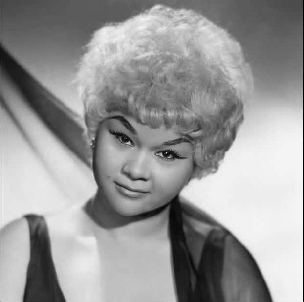

La vida de Etta James fue una vida adversa y excesiva: no conoció a su padre, su madre era prostituta y a lo largo de muchos años fue adicta a la heroína. Pese a los inconvenientes fue una de las reinas de la música y del blues.
Etta fue una cantante fundamental del los años 50, un momento en el que el blues rítmico trató de convertirse en rocanrol o acercarse definitivamente la jazz. Como tantas otras intérpretes, comenzó probando con el góspel en una iglesia de su barrio para ir aproximándose, al blues y luego al rythm and blues del momento. Era una mujer de carácter y todo lo que cantaba sonaba a conocido y a verdad. Temas de siempre: el abandono, la queja, y con mucho movimiento. “No me gustan los lugares donde la gente no puede bailar” declaraba.
Había nacido en Los Angeles, el 25 de enero de 1938 y se hizo famosa por canciones como The Wallflower, Something’s Got a Hold on Me y At Last. El primero de sus éxitos fue compuesto en 1955 por John Otis, descubridor de Etta y “el padrino del rythm and blues”, quien falleció un día antes que la cantante.